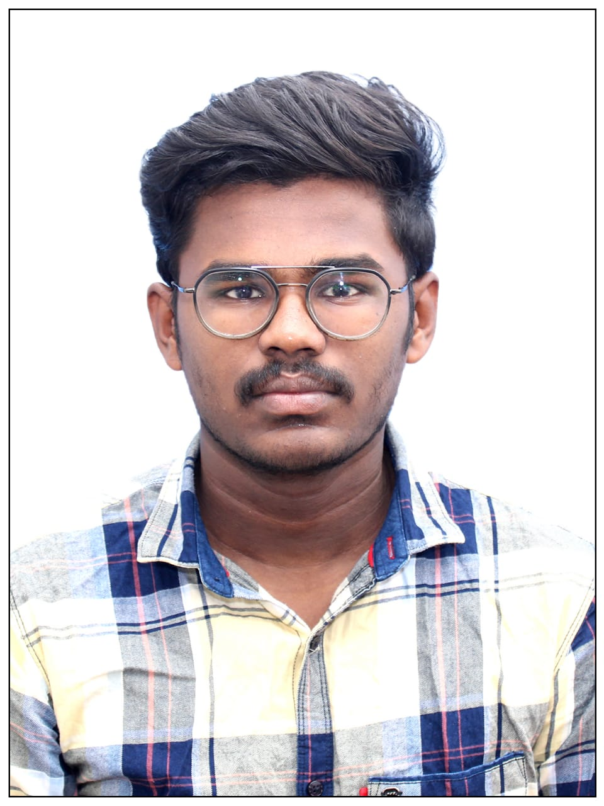

Electrical & Electronics Engineer
Email: nalinshanmugam04@gmail.com
LinkedIn: /nalinshanmugam
I'm a passionate Electrical and Electronics Engineer with a strong interest in embedded systems, automation, and modern tech innovation. With hands-on experience in Arduino, IoT, and circuit design, I aim to solve real-world problems using technology. I also enjoy coding and bringing projects to life through both hardware and software.
Built a system to monitor temperature and heart rate of cattle using IoT sensors and ESP32. Data is sent to a cloud dashboard for real-time monitoring. Helped local farmers reduce livestock health risks.
Technologies: ESP32, Arduino, Sensors, Firebase, Blynk
Developed a full-stack voting portal with admin and user login using Node.js, React, and MySQL. Simulated real-time voting and data visualization.
Technologies: Node.js, React, MySQL, Express.js
B.E. Electrical and Electronics Engineering
MKCE
Graduation Year: 2026
📧 Email: nalinshanmugam04@gmail.com
📞 Phone: +91-XXXXXXXXXX
💼 LinkedIn: /nalinshanmugam